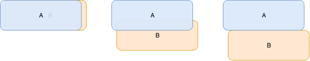
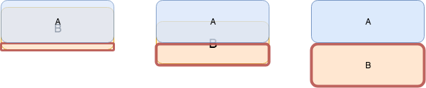

React Native pull Down 和pull Up动画踩坑记
React Native pull Down 和pull Up动画踩坑记
按照咱们前端的想法，大概有几个阶段，b创建，b pull down， b pull up，b销毁。
a的z-index设置为1，or b的z-index设为-1。b创建后，动画开始前，让b的margin top为负的b高，动画开始后，b的margin top逐渐变为0，反之亦然。
在RN中使用Animated View 来实现这个效果一开始ios，android也都正常。然而在android下如果b出现又销毁的时候，a就会白屏，这个bug最后定位到zIndex属性上，然后google一查果然，React Native 的bug zIndex does not work with dynamic components on Android.
由于b是一个动态组件，导致android上的zIndex的问题，这个问题直到0.54也没有修复。然而需求还是要实现的啊。。。怎么办呢，如果不用zIndex来实现这个效果？
新思路
让b的高度从0到1变化，相当于一个窗口，b里面的要展示的内容bottom 0绝对定位，我们通过改变窗口的高度来模拟这个pull down效果。
这个方案呢，在android上遇到了另一个问题，动画消失了，b是突然出现的，google之下参考issue6278，变化开始的时候，值为0被安卓认为是null而不渲染，解决办法就是 ：不要用0，用0.01。。。。。
另一个 ios 和android的不同是在于，ios在不设置overflow ： 'hidden'的情况下，即使窗口的高度小于内容的高度，超出的本分任然是可见的；而android超出部分是隐藏的。